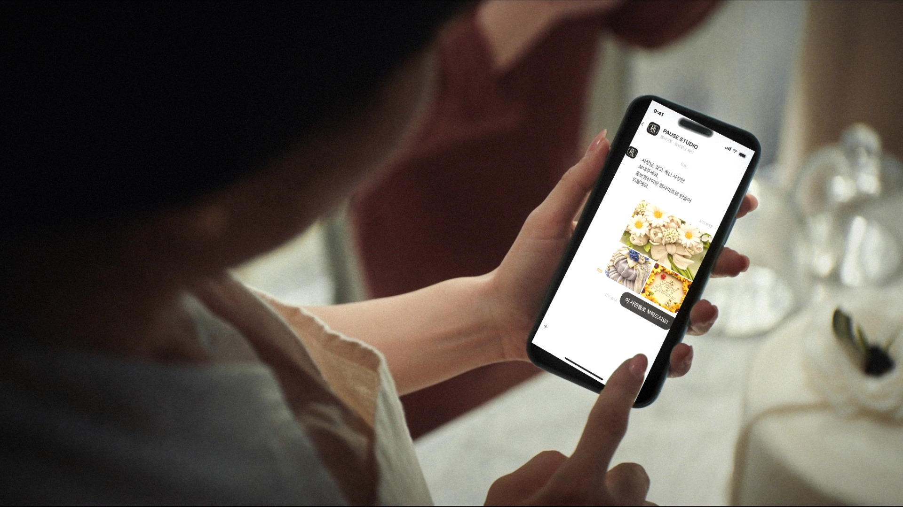
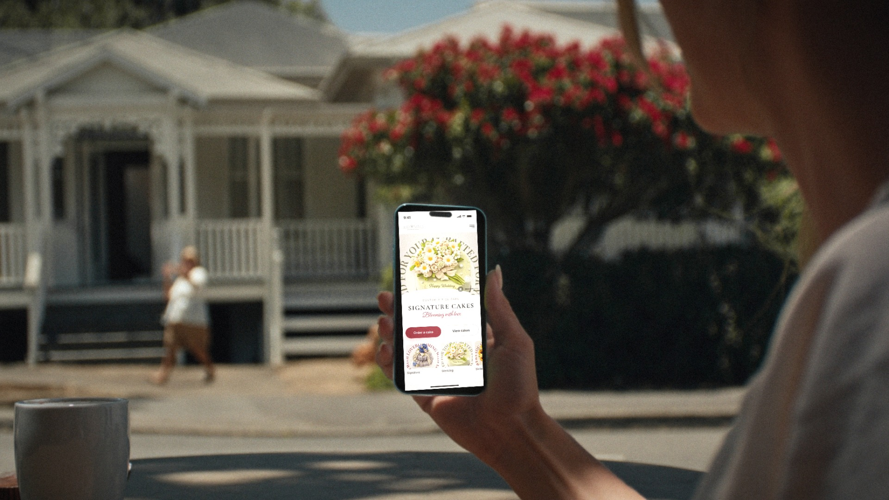
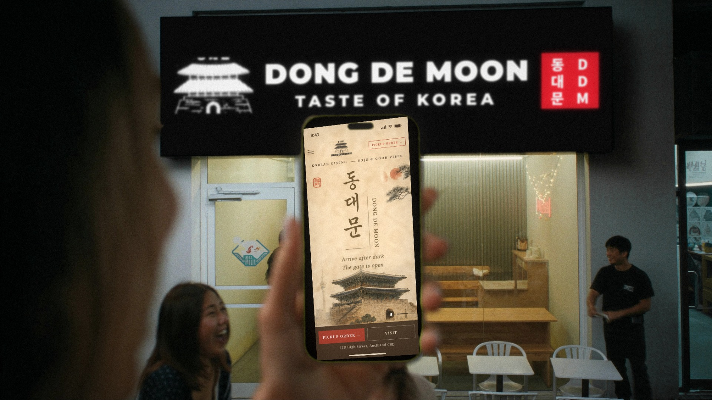
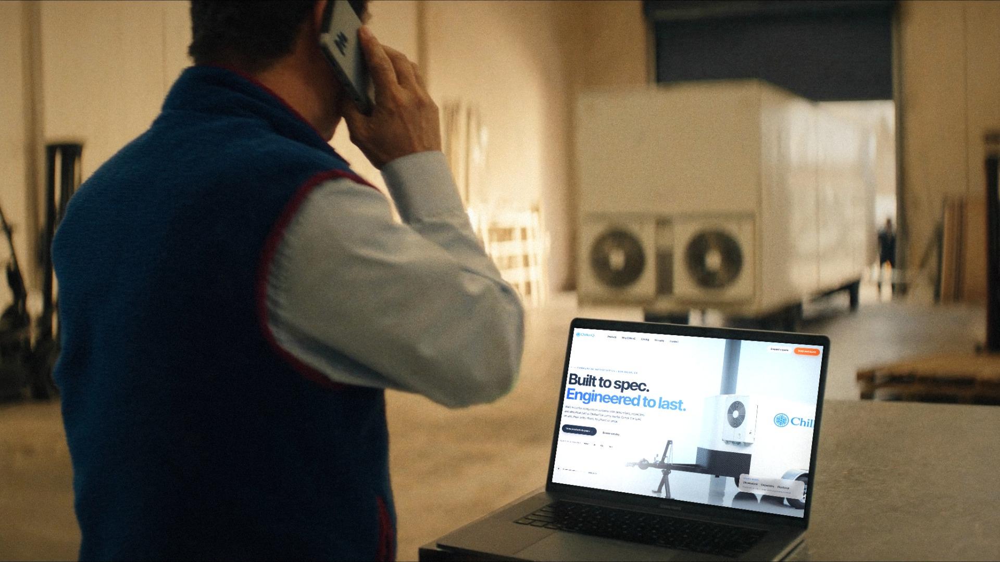
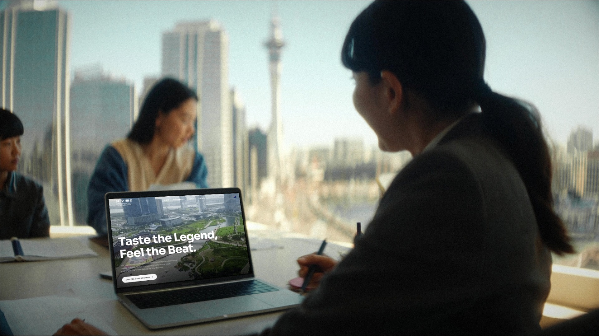
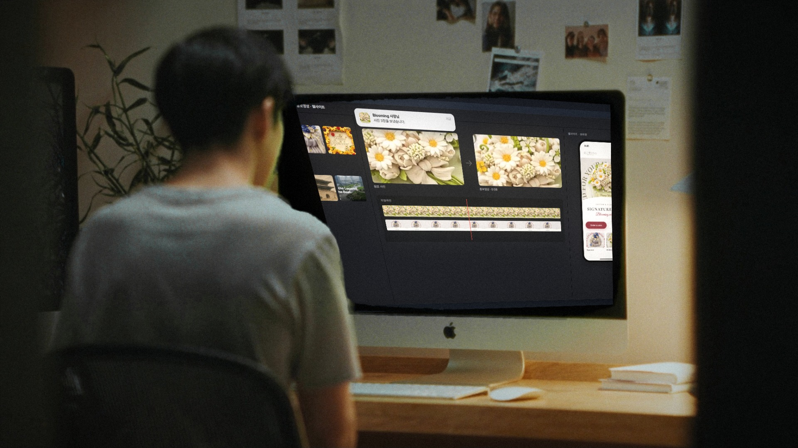

바뀐 점: 동대문을 실제 가게 모습으로(검은 간판·유리문·바깥 흰 의자) · ChillenQ는 설정샷 대신 실제 작업장 + 사이트 새 디자인 · 사이트 히어로가 영상이라는 재생 표시(일시정지 버튼·진행 막대) 흐름: 사진 보내기 → 사진이 영상으로 → 손님 휴대폰 속 사이트 → 실제 가게·현장 → 작업실 알림으로 반복 · 약 21초 · 자막 없음(화면 속 채팅·알림·사이트와 손동작으로 이야기)

0:00–0:02.5
컷 1 케이크 가게 · 아침사장님이 케이크 사진 3장을 채팅으로 보내고 "보내기"를 누름
0:02.5–0:05
컷 2 화면 인서트보낸 사진이 화면을 채우고 → 정지 사진이 움직이기 시작 = AI 홍보영상

0:05–0:08
컷 3 폰손비 카페 · 현지 손님 iPhone같은 케이크가 Blooming 모바일 사이트 히어로 영상으로 재생 중(재생 표시) → 스크롤 → "Order a cake"

0:08–0:11
컷 4 오클랜드 시내 밤 · 동대문 가게 앞실제 가게처럼: 검은 간판 "DONG DE MOON · TASTE OF KOREA", 유리문, 바깥 흰 의자. 휴대폰 속 동대문 사이트 ↔ 눈앞의 그 간판, 사장님이 문을 열어 맞음

0:11–0:14
컷 5 냉장 설비 작업장 · 노을빛설정샷 대신 실제 일하는 현장: 고객과 통화하며 노트북의 ChillenQ 사이트를 보는 담당자, 뒤로 냉장 트레일러

0:14–0:17
컷 6 시내 유학원 · 스카이타워 창밖상담사가 MacBook을 돌려 한국인 가족에게 K-VIBE(히어로 영상)를 보여줌

0:17–0:21
컷 7 PAUSE 작업실 · 밤받은 사진 → 영상 → 모바일 사이트. 새 알림 "Blooming 사장님 · 사진 3장을 보냈습니다" → 컷 1로 반복
화면 — 휴대폰은 모바일 레이아웃, 히어로는 영상(재생 표시)
ChillenQ 제품 사진은 시안용 생성 이미지에 실제 로고를 입힌 것 — 실제 제작 땐 ChillenQ 원본 영상·사진으로 교체